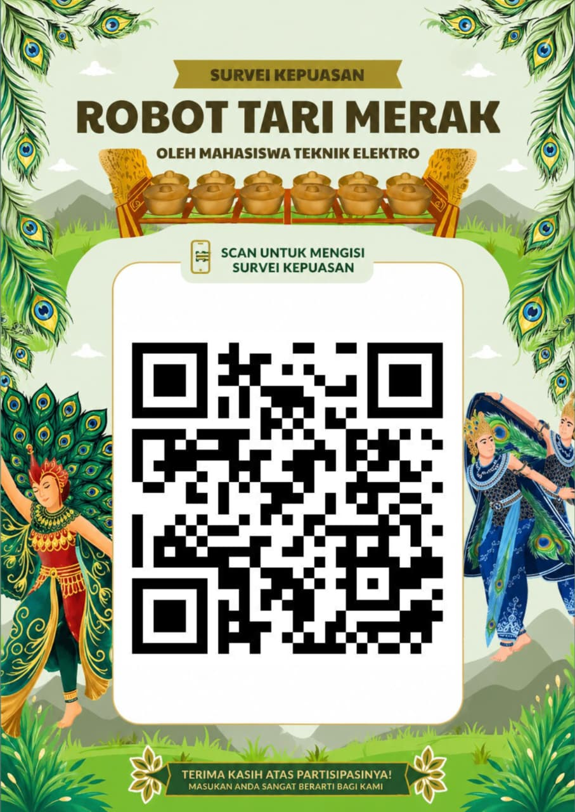

Robot Tari
Robot penari yang membawakan Tari Merak

Proyek robot penari yang dirancang untuk menampilkan gerakan Tari Merak secara otomatis. Proyek ini menggabungkan seni tradisional dengan teknologi modern.
Tari
Tari Merak
Teknologi
Sistem robotika
Tujuan
Edukasi & inovasi
Filosofi dan Makna Tari Merak

Tari Merak merupakan wujud karya seni yang terinspirasi dari kekaguman manusia terhadap pesona alam, khususnya keindahan burung merak. Warna-warni bulu ekor yang memikat serta gerakannya yang anggun di alam bebas menjadi dasar utama dalam penciptaan tarian ini.
Melalui rangkaian gerakan yang ditampilkan, Tari Merak tidak hanya menyuguhkan keindahan secara visual, tetapi juga merepresentasikan hubungan yang selaras antara manusia dan lingkungan sekitarnya.
Setiap gerakan dalam tarian ini disusun dengan penuh kelembutan, keluwesan, dan keseimbangan, sehingga mencerminkan nilai keanggunan yang mendalam. Keanggunan tersebut tidak hanya terlihat dari penampilan luar, tetapi juga menggambarkan sikap dan perilaku yang terjaga.
Di sisi lain, Tari Merak juga mengandung makna tentang pentingnya rasa percaya diri. Hal ini terinspirasi dari perilaku burung merak jantan yang dengan yakin memperlihatkan keindahan bulunya untuk menarik perhatian.

Sebagai bagian dari budaya Jawa Barat, Tari Merak mencerminkan karakter masyarakat Sunda yang menjunjung tinggi keramahan, kesantunan, dan keharmonisan.
Tari ini juga sering dipentaskan dalam berbagai acara penyambutan sebagai bentuk penghormatan kepada tamu.
Dengan demikian, Tari Merak tidak hanya berfungsi sebagai hiburan semata, tetapi juga sebagai media penyampai nilai-nilai kehidupan, seperti keindahan, keanggunan, rasa percaya diri, serta keharmonisan.
TRANSFORMASI DAN ADAPTASI TARI MERAK DALAM ARUS ZAMAN
Tari Merak menunjukkan bahwa seni tradisional tidak selalu bersifat statis, melainkan mampu berkembang mengikuti perubahan zaman. Adaptasi ini menjadi kunci utama agar tarian tetap relevan di tengah masyarakat modern yang terus mengalami perubahan pola pikir, teknologi, dan selera hiburan.
Salah satu bentuk adaptasi yang paling terlihat adalah pada inovasi gerakan. Dalam perkembangannya, koreografi Tari Merak tidak lagi terbatas pada pola gerak tradisional yang kaku. Para koreografer mulai menambahkan variasi gerakan yang lebih dinamis, cepat, dan atraktif tanpa menghilangkan karakter dasar tarian. Gerakan yang sebelumnya cenderung lembut kini dipadukan dengan variasi ritme yang lebih kompleks, sehingga mampu menarik perhatian generasi muda yang cenderung menyukai pertunjukan visual yang lebih energik.
Selain itu, adaptasi juga terlihat pada perubahan kostum. Kostum Tari Merak yang dahulu yang lebih ringan, fleksibel, dan nyaman digunakan. Perkembangan teknologi tekstil memungkinkan pembuatan kostum dengan warna yang lebih cerah dan tahan lama. Bahkan, dalam beberapa pertunjukan modern, kostum dilengkapi dengan elemen tambahan seperti lampu LED untuk memberikan efek visual yang lebih menarik di atas panggung. Hal ini menunjukkan bahwa aspek visual menjadi salah satu faktor penting dalam mempertahankan daya tarik tarian di era modern.
Adaptasi berikutnya terlihat pada penggunaan teknologi dalam pertunjukan. Jika dahulu Tari Merak hanya ditampilkan secara sederhana, kini pertunjukan sering dipadukan dengan tata cahaya (lighting), efek visual digital, dan desain panggung yang lebih kompleks. Penggunaan teknologi ini tidak hanya memperindah tampilan, tetapi juga menciptakan pengalaman baru bagi penonton. Pertunjukan menjadi lebih imersif dan mampu bersaing dengan bentuk hiburan modern lainnya seperti konser musik atau pertunjukan multimedia.

Selain itu, Tari Merak juga mengalami perkembangan melalui kolaborasi dengan berbagai jenis seni lain. Dalam beberapa kesempatan, tarian ini dipadukan dengan musik modern, tari kontemporer, bahkan seni pertunjukan digital atau berbasis elektronik. Kolaborasi ini menciptakan bentuk baru yang tetap mempertahankan identitas Tari Merak, namun dikemas dalam gaya yang lebih sesuai dengan selera masa kini. Dengan cara ini, Tari Merak tidak hanya bertahan sebagai warisan budaya, tetapi juga menjadi bagian dari inovasi seni yang terus berkembang.

Perkembangan lain yang sangat signifikan adalah pemanfaatan media digital. Di era internet, Tari Merak tidak lagi terbatas pada panggung pertunjukan fisik. Banyak penari dan komunitas seni yang memanfaatkan platform seperti YouTube, Instagram, dan TikTok untuk memperkenalkan tarian ini kepada masyarakat luas. Video pertunjukan Tari Merak dapat dengan mudah diakses oleh siapa saja, bahkan hingga ke luar negeri. Hal ini memperluas jangkauan audiens dan meningkatkan eksistensi tarian di tingkat global.
Media sosial juga memberikan ruang bagi kreativitas generasi muda dalam menginterpretasikan Tari Merak. Banyak penari muda yang menggabungkan unsur tradisional dengan gaya modern, seperti pengambilan video yang sinematik atau penggabungan dengan tren musik populer. Meskipun terkadang menuai pro dan kontra, fenomena ini menunjukkan bahwa Tari Merak tetap hidup dan berkembang di tengah perubahan zaman. Namun, modernisasi yang berlebihan juga berpotensi mengurangi nilai tradisional jika tidak dijaga dengan baik.

Dalam dunia pendidikan dan pelatihan seni, adaptasi juga terjadi melalui metode pengajaran. Sanggar seni dan institusi pendidikan kini tidak hanya mengajarkan gerakan secara konvensional, tetapi juga memanfaatkan media digital sebagai sarana pembelajaran. Video tutorial, kelas online, dan dokumentasi digital membantu proses belajar menjadi lebih fleksibel dan mudah diakses. Hal ini sangat penting untuk menarik minat generasi muda yang lebih akrab dengan teknologi.
Selain itu, pengaruh globalisasi juga menjadi tantangan tersendiri. Masuknya budaya asing yang lebih populer di kalangan generasi muda dapat menggeser minat terhadap seni tradisional. Untuk mengatasi hal ini, diperlukan strategi yang kreatif dan inovatif agar Tari Merak tetap menarik dan relevan. Salah satu caranya adalah dengan terus melakukan pembaruan tanpa meninggalkan akar budaya yang menjadi dasar tarian tersebut.
Di tingkat internasional, Tari Merak sering ditampilkan dalam berbagai acara budaya sebagai representasi kekayaan seni Indonesia. Hal ini menunjukkan bahwa adaptasi yang dilakukan tidak hanya bertujuan untuk mempertahankan eksistensi di dalam negeri, tetapi juga untuk memperkenalkan budaya Indonesia ke dunia. Dengan kemasan yang lebih modern dan menarik, Tari Merak mampu bersaing di panggung global tanpa kehilangan identitasnya.
Secara keseluruhan, perkembangan Tari Merak dalam beradaptasi dengan zaman menunjukkan bahwa seni tradisional memiliki fleksibilitas yang tinggi. Melalui inovasi gerakan, modernisasi kostum, pemanfaatan teknologi, kolaborasi seni, serta penggunaan media digital, Tari Merak berhasil mempertahankan eksistensinya di tengah perubahan zaman. Adaptasi ini tidak hanya membuat tarian tetap hidup, tetapi juga membuka peluang untuk terus berkembang di masa depan.
Dengan pendekatan yang tepat, Tari Merak dapat terus menjadi bagian penting dari identitas budaya Indonesia sekaligus menjadi inspirasi bagi perkembangan seni di era modern. Kunci utama dari keberhasilan adaptasi ini adalah kemampuan untuk menggabungkan nilai tradisional dengan inovasi modern secara seimbang. Dengan demikian, Tari Merak tidak hanya menjadi warisan budaya yang dilestarikan, tetapi juga menjadi karya seni yang terus berkembang dan relevan sepanjang waktu.
Nilai Budaya Tari Merak

Tari Merak merupakan salah satu tarian tradisional yang berasal dari Jawa Barat dan menggambarkan keindahan serta perilaku burung merak. Tarian ini tidak hanya memikat melalui gerakan yang anggun dan kostum yang berwarna-warni, tetapi juga mengandung berbagai nilai budaya yang penting.
-
Nilai Keindahan dan Estetika
Tari Merak menampilkan gerakan yang lembut, lincah, dan penuh pesona. Busana penari yang menyerupai bulu merak memperkuat unsur keindahan seni tradisional Sunda. -
Nilai Pelestarian Budaya
Sebagai warisan budaya daerah budaya suku Sunda, Tari Merak menjadi simbol kekayaan seni Jawa Barat. Pementasan tari ini membantu mengenalkan budaya lokal kepada generasi muda maupun masyarakat luas. -
Nilai Kesopanan dan Keanggunan
Gerakan dalam Tari Merak mencerminkan sikap anggun, sopan, dan penuh kelembutan. Nilai ini mengajarkan pentingnya menjaga perilaku dan etika dalam kehidupan sehari-hari. -
Nilai Kebersamaan dan Kerja Sama
Tari Merak sering ditampilkan secara berkelompok, sehingga membutuhkan kekompakan antarpenari. Hal ini mencerminkan pentingnya kerja sama dan kebersamaan dalam mencapai keharmonisan. -
Nilai Penghargaan terhadap Alam
Inspirasi Tari Merak berasal dari burung merak, yang menunjukkan hubungan erat antara manusia dengan alam. Tarian ini mengajarkan rasa kagum serta kepedulian terhadap keindahan satwa dan lingkungan.

Melalui nilai-nilai tersebut, Tari Merak tidak hanya menjadi hiburan, tetapi juga media pendidikan budaya yang memperkaya identitas bangsa Indonesia.
Sejarah Tari Merak

Tari Merak merupakan salah satu jenis tari kreasi baru yang berasal dari tanah Pasundan, Jawa Barat, dan diciptakan sekitar tahun 1950-an. Tarian ini dikoreografi pertama kali oleh seniman bernama Raden Tjetje Somantri. Inspirasi penciptaan tarian ini datang dari kehidupan burung merak, khususnya perilaku burung merak jantan yang mengepakkan sayap indahnya untuk menarik perhatian merak betina. Melalui pengamatan terhadap keanggunan dan keindahan gerakan burung tersebut, Raden Tjetje menyusun rangkaian gerak yang memadukan unsur tari tradisional Sunda dengan interpretasi artistik yang lebih modern dan dinamis. Pada awalnya, Tari Merak diciptakan sebagai bagian dari sendratari, namun seiring berjalannya waktu, tarian ini berdiri sendiri sebagai tarian lepas yang sangat populer.

Perkembangan Tari Merak mengalami perubahan besar pada tahun 1960-an melalui sentuhan murid Raden Tjetje Somantri, yaitu Irawati Durban Ardjo. Beliau melakukan penyempurnaan pada struktur gerakan serta desain kostum agar terlihat lebih megah dan menyerupai burung merak yang sesungguhnya. Salah satu ciri khas yang ditambahkan adalah penggunaan sayap yang dapat dibentangkan oleh penari serta hiasan kepala (siger) yang menyerupai kepala burung merak.
Meskipun gerakan aslinya terinspirasi dari merak jantan, tarian ini dibawakan oleh penari perempuan dengan gerakan yang gemulai namun tetap menunjukkan kesan ceria dan penuh percaya diri. Berkat estetika visualnya yang memukau, Tari Merak tidak hanya menjadi kebanggaan masyarakat Sunda, tetapi juga menjadi salah satu duta budaya Indonesia di kancah internasional.
Gerakan & Ciri Khas Tari Merak
Gerakan dasar:
Jika kamu tertarik untuk mempelajari tari merak, maka kamu bisa mempelajari gerakan dasarnya yang meliputi gerakan kepala, tangan, kaki serta sampuran. Untuk lebih jelasnya, berikut ini adalah gerakan dasar tari merak yang perlu kamu ketahui.
-
Galier
Galier adalah gerakan yang mengharuskan penari untuk memutar kepalanya ke arah kanan, kiri, depan, dan belakang. -
Gilek
Gilek adalah gerakan yang mengharuskan penari untuk menggelengkan kepalanya ke arah kanan dan ke kiri. -
Ukel
Ukel adalah gerakan tangan pada tari merak yang dilakukan secara luwes saat memutar tangan sesuai irama dari musik pengiring. -
Selut
Selut adalah gerakan tangan ke kanan dan ke kiri bersamaan dengan gerakan mendorong tangan ke depan atau ke atas sesuai irama secara bergantian. -
Tepak Bahu
Gerakan tepak bahu adalah gerakan penari saat menepuk pundak dengan salah satu tangannya. Tepak bahu dilakukan dengan posisi tangan bersilang dalam dua putaran tangan. -
Capang
Capang adalah gerakan penari merak ketika menekuk satu tangan -
Nyawang
Nyawang adalah gerakan isyarat tangan dari penari yang menunjukkan kepada para penonton bahwa penari sedang melihat jauh ke depan -
Lontang Kanan jeung Kiri
Lontang kanan atau Lontang kiri adalah gerakan tangan penari menggunakan kedua tangannya untuk saling bergerak secara bergantian. -
Duduk Deku
Duduk Deku adalah gerakan panri yang duduk bersila atau melipat kakinya ke bawah. -
Seser
Seser adalah gerakan kaki yang mengharuskan panri untuk menggeser kaki ke kanan dan ke kiri. -
Siring
Sirig adalah gerakan kaki penari saat menggoyangkan kedua kakinya secara bersama sama.
Gerakan Tari Merak
Jika sebelumnya membahas tentang gerakan dasar dari tari merak, maka dibawah ini adalah beberapa pengaplikasian gerakan dasar menjadi gerakan yang indah.
-
Kaki digerakan seperti sedang mengais tanah, sambil menggelengkan kepala layaknya
burung merak. Posisi tangan berada di samping tubuh dan jari memegang selendang
berbentuk sayap merak. Beberapa kali tangan diayunkan ke depan dan belakang.
-
Bahu digerakkan ke depan dan ke belakang. Ketika melakukan posisi tubuh jongkok
dan kedua tangan diletakkan di bagian atas.
-
Gerakan tubuh ke depan dan belakang, sambil memperhatikan tempo lagu. Jika lagu
cepat, tubuh digerakan lebih cepat, ketika melambat maka tubuh juga akan ikut melambat
-
Gerakan tubuh ke depan dan belakang, sambil memperhatikan tempo lagu. Jika lagu
cepat, tubuh digerakan lebih cepat, ketika melambat maka tubuh juga akan ikut melambat.
-
Gerakan tubuh ke depan dan belakang, sambil memperhatikan tempo lagu. Jika lagu
cepat, tubuh digerakan lebih cepat, ketika melambat maka tubuh juga akan ikut melambat.
Pola Lantai Tari Merak
Pola lantai melingkar jadi salah satu bagian dari pola lantai garis lengkung. Dalan tarian merak, pola lantai ini dilakukan secara melingkar dan menghadap ke arah luar.
-
Pola lantai melingkar
Pola lantai melingkar jadi salah satu bagian dari pola lantai garis lengkung. Dalan tarian merak, pola lantai ini dilakukan secara melingkar dan menghadap ke arah luar. -
Pola lantai horizontal
Selain menggunakan pola lantai melingkar, tari merak juga menggunakan pola lantai horizontal. Pola horizontal yaitu dengan membentuk formasi lurus ke samping kanan atau kiri. -
Pola lantai diagonal
Pola lantai yang terakhir adalah pola lantai diagonal, dalam pola lantai ini, penari akan bergerak membentuk formasi secara melintang dari sudut kiri bawah ke sudut kanan atas dan juga sebaliknya. Biasanya pola lantai ini dilakukan secara berhadapan.
Ciri Khas Tari Merak
Setiap tarian daerah tentu memiliki ciri dan karakteristiknya masing-masing termasuk tari merak. Tari ini memiliki karakteristik dan ciri yang membedakan dengan tari lainnya. Hal ini terlihat dari gerakan penari, properti, dan juga penyajiannya yang unik. Karakteristik dan ciri tari merak sebagai berikut:
-
Kostum Penari Tari Merak
Kostum atau busana penari dalam tari merak di desain seperti burung merak lengkap dengan bulu-bulunya. Hal ini ditampilkan dalam penggunaan warna biru, hijau, dan hitam sebagai ciri khas dari burung merak itu sendiri. Kostum penari dilengkapi juga dengan sayap yang dapat dibentangkan. Selain itu, juga pada bagian kepala dilengkapi dengan mahkota.
-
Gerakan
Gerakan penari merak sebisa mungkin mengikuti tingkah laku burung merak jantan ketika mendekati burung merak betina. Kemudian, gerakan-gerakan itu dilakukan dengan gemulai. -
Dipentaskan secara berpasangan
Dalam penampilannya, tari merak dipentaskan secara berpasangan sebagai simbol antara merak jantan dan merak betina.
Survei Pengunjung RESAKA
Terima kasih telah mengunjungi booth kami. Silakan isi survei singkat melalui QR code di bawah ini.
Scan QR untuk mengisi survei

Isi Survei SekarangTerima kasih atas waktu dan penilaiannya 🙏
💬 Kesan & Pesan Pengunjung
Tim

MUHAMMAD KHOLILUR ROHMAN
2410631160079

NUR FITRI ARYANTI
2410631160086

HAFIZH HUSNULLABIB ACHMAD
2410631160119

RAFA HERU PUTRA RASYID
2410631160130

FAUZAN ADIRA ADRIYANTO
2410631160114
ARLYN YANUARI
2410631160053
RIZAL TRI MULIA RAMADHAN
2410631160135
MUHAMMAD RIFKY DWINOVA AKBAR
2410631160028
MUHAMMAD ANDHIKA AL'ARSY
2410631160074
Dokumentasi Progres
Dokumentasi Awal
Tahap awal perancangan proyek RESAKA, meliputi diskusi konsep, pembagian tugas tim, dan perencanaan sistem robot.
Dokumentasi 2
Proses pengembangan mulai dilakukan, termasuk perakitan awal dan pengujian sistem dasar robot.
Memuat komentar...